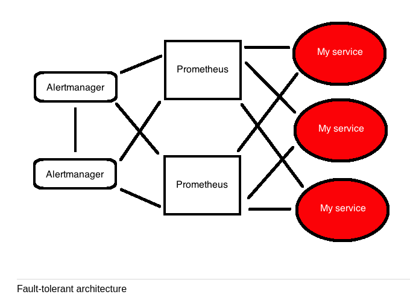
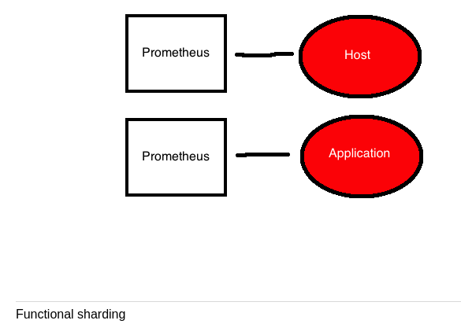
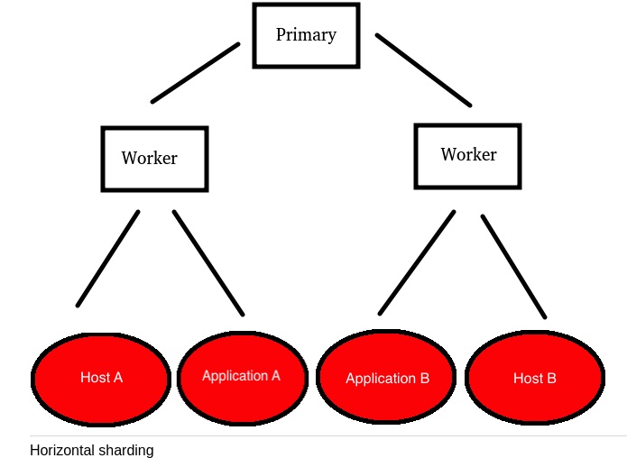

1 Scaling and Reliability
2 Reliablity and fault tolerance
- Fault tolreance for monitoring services is addressed by making the monitoring service highly availably usually by clustering the implementation. Clustering solution however require complex networking and management of state between nodes in the cluster.
- The recommended fault toloreant solution for Prometheus is to run two identically configured Prometheus servers in parallel, both active at the same time. Duplicate alerts are handled upstream in Alertmanager using it's grouping and inhibits capacity.
- Alertmanager is made fault tolerant by creating a cluster of
Alertmanagers. All prometheus servers send alerts to all
Alertmanagers.

2.1 Setting up Alertmanager clustering
- Cluster capability provided by Hashicorp's memberlist library which uses a gossip based protocol.
Let's say we have three hosts am1, am2 and am3. We will use the
am1 host to initiate the cluster.
am1$ alertmanager --config.file alertmanager.yml --cluster.listen-address 172.19.0.10:8001
am2$ alertmanager --config.file alertmanager.yml --cluster.listen-address 172.19.0.20:8001 --cluster.peer 172.19.0.10:8001
am3$ alertmanager --config.file alertmanager.yml --cluster.listen-address 172.19.0.30:8001 --cluster.peer 172.19.0.10:8001
You can check that they are indeed clustered at https://127.0.0.1:9000/status
2.2 Configuring Prometheus for an Alertmanager cluster
Edit prometheus.yml:
alerting:
alertmanagers:
- static_configs:
- targets:
- am1:9093
- am2:9093
- am3:9093
The above configuration assumes that the Prometheus server can resolve DNS entries for each of the alertmanager.
3 Scaling
Scaling usually takes two forms:
- Functional scaling
- Horizontal scaling
3.1 Functional scaling
- Splits monitoring concerns onto separate Prometheus servers.

3.2 Horizontal shards
- Horizontal sharding uses a series of worker prometheus servers each of which scrapes a subset of targets. We then aggregate specific time series we're interested in on the worker servers.
- The proimary server not only pulls in the aggregated metrics but now
also acts as the default source for graphing or exposing metrics to
tools like Grafana.

4 Remote storage
Prometheus has the capability to write to remote stores of metrics.